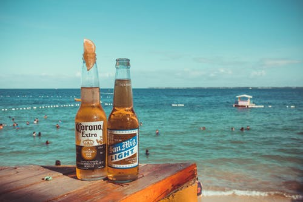
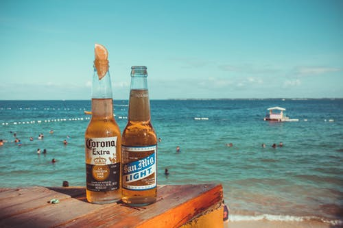

Over Brouwwereld
Brouwwereld is dè productspecialist voor het zelf maken van bier, wijn, zuivel en likeur en biedt al 20 jaar gemakkelijk, voordelig en vertrouwd shoppen, zowel online als in onze megastore in ‘s-Hertogenbosch. Wij zijn een professioneel, snelgroeiend bedrijf met meer dan 15 werknemers dat zich richt op het aanbieden van kwaliteitsproducten tegen een zo laag mogelijke prijs met 100% klanttevredenheid.
Steeds meer mensen ontdekken het unieke gevoel van thuisbrouwen. Er gaat niets boven de kwaliteit en het genot van een eigen gemaakt, ambachtelijk en puur natuurproduct.
Brouwwereld staat midden in de community van thuisbrouwen. Wij zien onszelf als The Home of Homebrewers. Wij begrijpen als geen ander de hartstocht van thuisbrouwers; want wij zelf zijn ook zo begonnen. Uit de passie en het plezier dat we aan thuisbrouwen beleefden, is Brouwwereld geboren.
Wij willen het elke thuisbrouwer gemakkelijk maken om zijn of haar passie volop te beleven. Begonnen als bevlogen pionier op het gebied van thuisbrouwen zijn we inmiddels uitgegroeid tot de enige echte thuisbrouwer specialist in Nederland, België, Duitsland en Frankrijk.
Wat wij in al die jaren geleerd hebben, geven we door in onze winkels, op onze website, met ons enorme assortiment, onze kennis en ervaring. En met onze liefde voor thuisbrouwen.
Wij willen de plek zijn waar iedere thuisbrouwer terecht kan voor de beste materialen en ingrediënten. Voor alle slimme tips & tricks die we kennen. Bij ons is elke thuisbrouwer niet alleen welkom, hier is elke thuisbrouwer thuis.
Visuele beelden van ons

 
